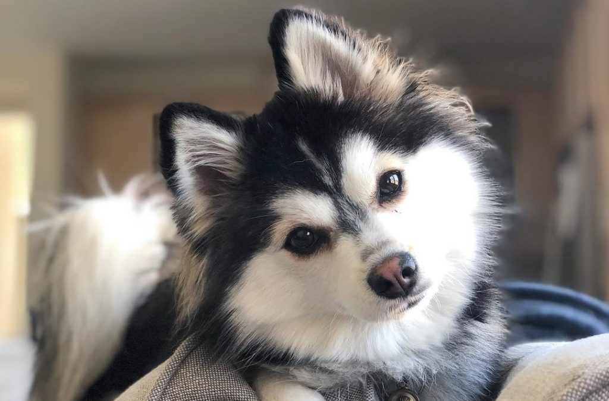
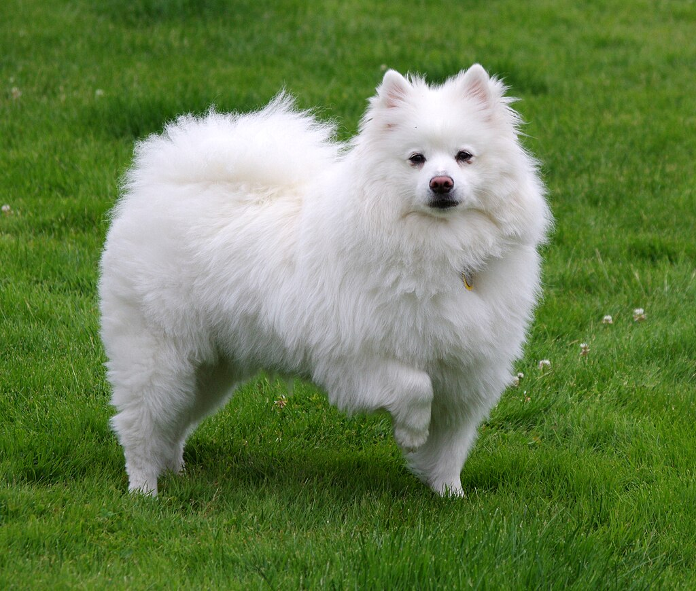

A puppy is a juvenile dog. Some puppies can weigh 1–1.5 kg (2.2–3.3 lb), while larger ones can weigh up to 7–11 kg (15–24 lb). All puppies display primary altriciality and healthy puppies grow quickly after birth. A puppy's coat color may change as the puppy grows older, as is commonly seen in breeds such as the Yorkshire Terrier. Puppy refers specifically to young dogs,[1] while pup may be used for other animals such as wolves, seals, giraffes, guinea pigs, rats or sharks.[2]

Pom (comics) (1919–2014), a Belgian comic strip writer and artist Baby Pom, a fictional character in the British television programme Fimbles Pom, a character in the video game Them's Fightin' Herds
.jpeg)
Pomsky is Mix Breed of Pomeranian and Siberian Husky. Pomsky being the newcomer in the group of designer dogs, there is no doubt that he is one of the most loving dogs you can come across.
Husky is a general term for a dog used in the polar regions, primarily and specifically for work as sled dogs. It refers to a traditional northern type, notable for its cold-weather tolerance and overall hardiness.[1][2] Modern racing huskies that maintain arctic breed traits (also known as Alaskan huskies) represent an ever-changing crossbreed of the fastest dogs.[3][4]

PUP (abbreviation for Pathetic Use of Potential) is a Canadian punk rock band formed in Toronto, Ontario in 2010,
originally under the name Topanga. PUP's debut album PUP was released on October 8, 2013, on Royal Mountain
Records.[2] In December 2013, PUP signed with SideOneDummy Records and re-released their debut album in the
United States on April 8, 2014.[3] The group was in the studio in late 2015 recording their second album The
Dream Is Over which was released on May 27, 2016, through SideOneDummy.[4] The band's third album, titled Morbid
Stuff, was released on April 5, 2019.[5][6] This Place Sucks Ass, a six-track EP, was released on October 27,
2020.[7] Their fourth album, The Unraveling of PUPTheBand, was released on April 1, 2022.
The American Eskimo Dog is a breed of companion dog, originating in Germany. The American Eskimo Dog is a member of the Spitz family. The breed's progenitors were German Spitz, but due to anti-German sentiment during the First World War, it was renamed "American Eskimo Dog." Although modern American Eskimo Dogs have been exported as German Spitz Gross (or Mittel, depending on the dog's height), the breeds have diverged and the standards are significantly different. In addition to serving as a watchdog and companion, the American Eskimo Dog also achieved a high degree of popularity in the United States in the 1930s and 1940s as a circus performer.
